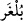
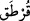
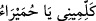
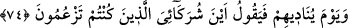

yaparlar. Nitekim Peygamber (s.a.) Deccâl’in zuhûru zamanı ile ilgili hadiste buyurur
ki: “Onun bir günü bir sene gibi, diğer bir günü bir ay gibi, diğer bir günü bir hafta
gibidir...”[137] Bu nedenle, onun zamanında oruç ve namaz vakitleri bu şekilde takdir
edilir. Rasûlullah (s.a.), hadisin devamında ashâbın sorusu üzerine vakit takdiri
yapılmasını emretmiştir.
Kâmûs’ta der ki: “
(Bulgar)” kelimesi, “
(elbise, kaba)” veznindedir. Halk
arasında Slavların yaşadığı ve şiddetli soğukların bulunduğu kuzeydeki bölgelere
“Bulgar” denir (Tataristan’ın kuzeyinde yer alan Sibirya). Buralarda fecir, yılın en kısa
günlerinde şafağın kaybolmasından önce doğar. Bu nedenle oralarda yaşayan insanlara
yatsı ve vitir namazı vâcib (farz) değildir; çünkü vücûbunun sebebi olan vakit yoktur.
Vakit, namazın eda şartı olduğu gibi o aynı zamanda vücûbunun da sebebidir. O olmadan
namaz vâcib olmaz; usûlde de bu böyledir. Yine güneş batarken fecrin doğduğu bir
belde de akşam ve yatsı namazları oradaki insanlara vaktini bulamadıkları için vâcib
olmaz. Nitekim bir adamın iki eli bileklerinden kesilse, veya iki ayağı topuklarından
kesilse, ona göre abdestin farzları üçtür; çünkü dördüncüsünün mahalli yok olmuştur.
Fıkıhta da bu mesele bu şekilde anlatılmıştır.[138]
Burada tecellî gündüzüne ve beşeriyyet örtüsü geceye işâret vardır. Tecellî gündüzü
devam etse, tecellîye mazhar olan kimse onun artışına ve şiddetine tahammül edemez.
Bu yüzden Allah onu beşeriyyet örtüsüyle örter; böylece yorgunluk o kimseden gider,
rahata kavuşur. İşte Rasûlullah (s.a.)’in Âişe (r.anhâ)’ya “
: Benimle konuş,
yâ Humeyrâ (Pembecik)”[139] hitabında da buna işâret vardır. Beşeriyet örtüsü, hicâb
şeklinde bir örtü değildir. Çünkü bu örtü, tecellînin peşinden meydana gelir; bu bir
rahmet ve ikram hicâbıdır; zahmet (güçlük) ve mihnet hicâbı değil. Bu durum,
Peygamber (s.a.)’in muhâfaza etmeye çalıştığı hususlardandır.
Bu nedenle o (s.a.) şöyle buyururdu: “Bazen kalbimin perdelendiği olur da, günde
yetmiş defa istiğfar ederim.”[140] Bu, ilâhi lutûf ve rahmetin bir sonucudur; hicab ise
Hak Teâlâ’dan men olunma mânâsına gelir; kahır ve izzetinin bir sonucudur. Nitekim
Allah Teâlâ kahrına uğrayanlar hakkında buyurur ki: “Hayır! Onlar süphesiz o gün
Rablerinden (O’nu görmekten) mahrum kalmışlardır.” (el-Mutaffifîn, 83/15).
Dağ, rubûbîyyet sıfatının tecellîsinin şiddetinden dolayı yerinde duramadı ve onu
yerle bir etti. Mûsâ (a.s.) da peygamberlik gücüne rağmen bayılıp yere düştü. Bu
tecellî, göz açıp kapama süresinden daha azdır; şâyet devam etmiş olsa, zayıf yaradılışlı
insan nasıl yaşardı.
74. O gün Allah onları çağırarak: Benim ortaklarım olduklarını iddiâ ettikleriniz